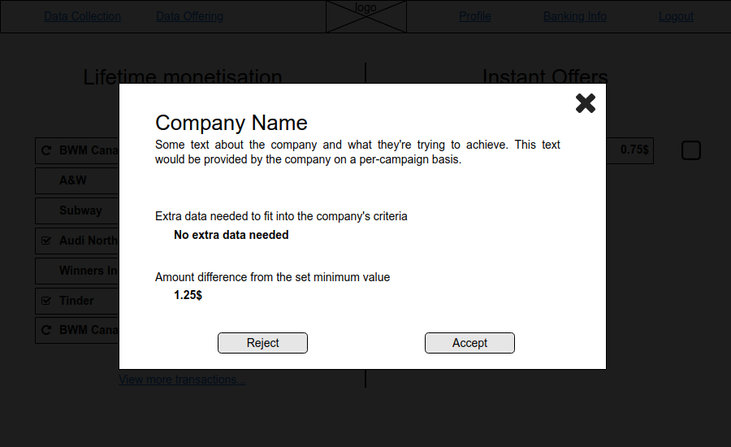
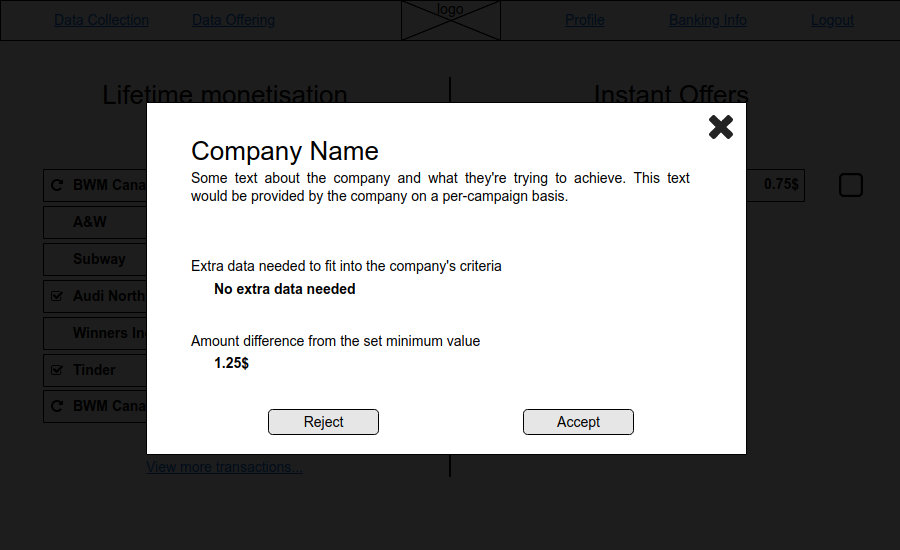

There are 2.5 quintillion bytes of data created daily, and this number will only grow with the expansion of the internet of things, cloud storage and social media. Those bytes of data can come from smart devices (speakers, phones, watches, etc.), the internet, social media, communication, photos, services, and more. Data is everywhere, and companies around the globe pay big bucks to acquire it. They’re willing to go far for people’s personal data to be able to target the right markets and enhance their revenue, for example by the means of targeted ads. Companies that sell people’s personal information can retrieve that data by listening to people’s conversations, tracking their search histories, retrieving data from forms that they have completed, etc. The problem is that the user has consented to their practices when they accept their consent form and download or visit their services. The reality is nobody reads the totality of the consent form or the terms and conditions that determine what companies can do with their data. The result of this is that users discard their data privacy. We believe that everyone should have a say on how their personal data is used, and who can benefit from it. The goal of DataPiggy is to create a personal data marketplace where users can freely sell their data to whoever they want to, for whatever purpose they feel comfortable with, and profit from it.
Eight questionnaires and 25 forms were completed by potential users to help us better understand what people would want from a data marketplace.
The key points retrieved from the online forms were that users generate a lot of data on social media, and are generally concerned about their data privacy. They are most willing to sell social media information and likes, and almost never wanted to sell personal conversations and emails. It was no surprise to find out that they wanted to choose the data they could sell and set a price for it. Some comments received on the form included
Updates on how my data is used. In which domain my data is used.
We addressed this by showing a history of past transactions, along with
who they sold their data to and for what. We made sure to incorporate
those needed features in our design.
Cost per data depending on type
We addressed this by showing how
much the data they selected usually sells for. They are still allowed to
set any price they want though.
Possibility to opt-out of any data selling
In our app, users will
accept offers manually. To avoid selling any data, one must simply not
accept any offers - but they are still shown which companies want to buy
their data, which is still interesting.


We also conducted interviews to get a better feeling of our users’ needs. The conclusion we got from the interviews resembled the one from the forms. However, after speaking with our users, it was revealed that there were concerns about security and transparency. Recent fraud events across Quebec have left the people wary, and it’s essential that our users know our platform is secure. The users also wanted information about who was buying their data, and it was important to them that they could set the price themselves.
The sets of interviews can be found here
Results from interacting with our users suggested that there could be different types of users that could use DataPiggy. Creating personas helped us better understand our users’ needs, experiences, goals, and behaviors. The three personas are two extreme views (sell everything and sell nothing) and one moderate view (sell some data selectively).


Before jumping into designing and creating charts, it was important to see examples of current marketplaces to have a better understanding of what users are used to. Popular marketplace includes but isn’t limited to Facebook, Kijiji, Letgo. From a seller perspective, these popular websites have some points in common, the UI/UX is very simple, and minimalist. When selling an item, you can choose a category and attached to it a price. It’s key to keep the same approach to create a sentiment of familiarity.
In this user journey, the persona of Emma Bison is going to set up an account for DataPiggy. She is apprehensive at first, and her emotional state is low. As the journey progresses, she becomes more comfortable with the idea of selling her data. Included in this user journey are her thoughts, actions, emotional state, and finally the things to keep in mind for the designers based on all these.


 



This storyboard explains the thoughts and feelings of Sandy. She feels watched by her devices and the softwares she uses, represented by the red eyes watching her. She knows “They” are watching her and collecting her data, but she doesn’t know who “They” are, and what they are doing with it. When she discovers DataPiggy, she feels in control, and informed about what is happening with her data. She even gets paid! In the end, the eyes are still watching, but they are less threatening to her now.

The name DataPiggy came from merging the familiarity of a simple piggy bank and the main theme of data. The team wanted a simple logo that could fit with our style guides. After multiple iterations, a monochrome colour was chosen.
For our style guide, the burgundy, sunglow, and my sin colours were chosen. The burgundy colour symbolizes ambition, wealth, and power, which mix perfectly with the empowerment that we want to give our user with their data. Sunglow, and my sin mix perfectly with the burgundy colour, which create an efficient palette. For the typography, the team decided to go with Montserrat. Montserrat is a popular and neat font from adobe. We wanted a simple font to go well with DataPiggy. For the icons, FontAwesome icons were chosen by the team. They are free, and offers multiple icons on data, banking, technologies, etc., which made the choice simple.

In today's world, animations are key to an application. Users are used to interactive websites, and it adds a lot of fun and life to the websites. DataPiggy will have a custom splash screen while the user information is being fetched.